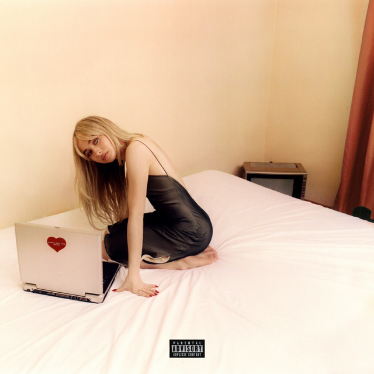

victorialiciousss.com
background

emails i can't send fwd:
Emails I can’t send fwd: is the deluxe to Sabrina Carpenter's fifth studio album. The original album was released in July of 2022 then 8 months later, on March 17, 2023, the deluxe edition came out. This album was the beginning of Sabrina's skyrocketing career. Since this release, she has become a two time grammy winner and six time nominee. She has headlined a number of notable music festivals such as Lollapalooza (2025), Austin City Limits (2025), Outside lands (2024), and the upcoming 2026 Coachella festival
Who's the clown
Who’s the clown is Audrey Hobert's debut album. It was released on August 15, 2025. Hobert made her singer/songwriter debut on May 9, 2025 with her single Sue me, which took off on tiktok. Prior to her album release, Hobert worked as a writer for several Nickelodeon shows and was a co-writer on her best friend Gracie Abrams most recent album The secret of us. Their public friendship is what influenced Hobert's quick cult following fanbase.

Older (and wiser)
Older (and wiser) is the deluxe to Lizzy Mcalpine’s third studio album. The original album “Older” was released April of 2025 and the deluxe edition came out seven months later in October. McAlpine is a smaller artist who got her start on tiktok. With each album she releases she slowly climbs up the ladder of major industry success.